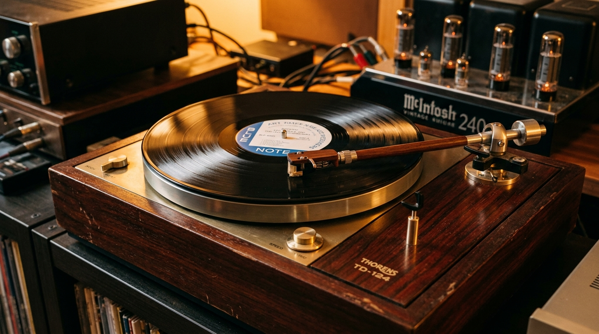
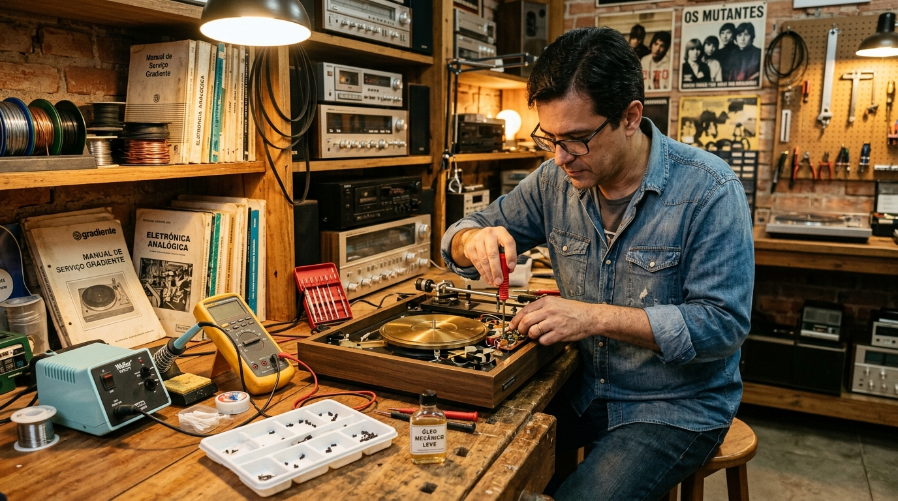

⚙️
Restauração Mecânica Integral
Desmontagem de todos os componentes, desengraxe ultrassônico de graxas ressecadas dos anos 70/80 e relubrificação de eixos com óleos técnicos específicos.

Resgatamos a pureza sonora e a engenharia de precisão da era de ouro do áudio. Cada vitrola é 100% desmontada, recebe recap elétrico, calibração estroboscópica e certificação de bancada com 90 dias de garantia.
Tracking force aferido em miligramas (1.5g a 2.0g). Proteção total dos sulcos contra desgastes prematuros.
Cápsula alinhada pelo método Baerwald / Stevenson, eliminando distorções de rastreamento no final do disco.
Troca preventiva de capacitores secos e aterramento dedicado. Silêncio absoluto nas pausas musicais.
Braço travado, prato e contrapeso embalados em separado com calços de alta densidade para viagem segura.

Comandada pelo especialista André Luis Denani no ABC Paulista, a Loucos por Vitrola nasceu da união entre a paixão visceral pelo disco de vinil e a dedicação rigorosa à eletrônica analógica.
Diferente de aparelhos modernos de plástico descartável com agulhas que danificam seus discos, os clássicos vintage das décadas de 70 e 80 contam com chassis em madeira maciça, pratos de ferro fundido de alta inércia e braços balanceados. Na nossa bancada, cada equipamento recupera suas características originais de fábrica.
Atendimento presencial no ABC Paulista por agendamento ou recebimento de aparelhos de todo o Brasil.
Desmontagem de todos os componentes, desengraxe ultrassônico de graxas ressecadas dos anos 70/80 e relubrificação de eixos com óleos técnicos específicos.
Recap de capacitores desgastados que geram roncos elétricos (hum), desoxidação de potenciômetros, chaves de seleção e cabos RCA blindados banhados a ouro.
Instalação de agulhas e cápsulas novas (Audio-Technica, Le-Son, Shure), alinhamento com transferidor Stevenson/Baerwald e aferição de tracking force em balança digital.
Transparência absoluta no processo técnico de recuperação dos aparelhos.
Relatos autênticos de clientes da região do ABC, capital paulista e de todo o Brasil.
"Comprei meu Gradiente D30 com o André e o aparelho superou todas as expectativas. A embalagem é uma verdadeira obra de arte, chegou impecável aqui no Rio de Janeiro. Recomendo de olhos fechados!"
"Levei o toca-discos Garrard que era do meu pai e estava parado há mais de 25 anos. O André restaurou a mecânica toda, eliminou o ruído e deixou novo em folha. Trabalho de extrema dedicação."
"O Polyvox TD 2000 que comprei veio com cápsula nova regulada e a rotação travada no estroboscópio. O suporte pelo WhatsApp para tirar dúvidas de ligação foi impecável. Parabéns pelo projeto!"
Tudo o que você precisa saber sobre compras, restaurações e envios.
Clique nas imagens para expandir e navegar pelos detalhes dos nossos projetos.
Fale diretamente com André Luis Denani pelo WhatsApp. Esclarecemos todas as dúvidas sobre compatibilidade de caixas de som, pré-amplificadores phono, orçamentos de restauração e envios protegidos.